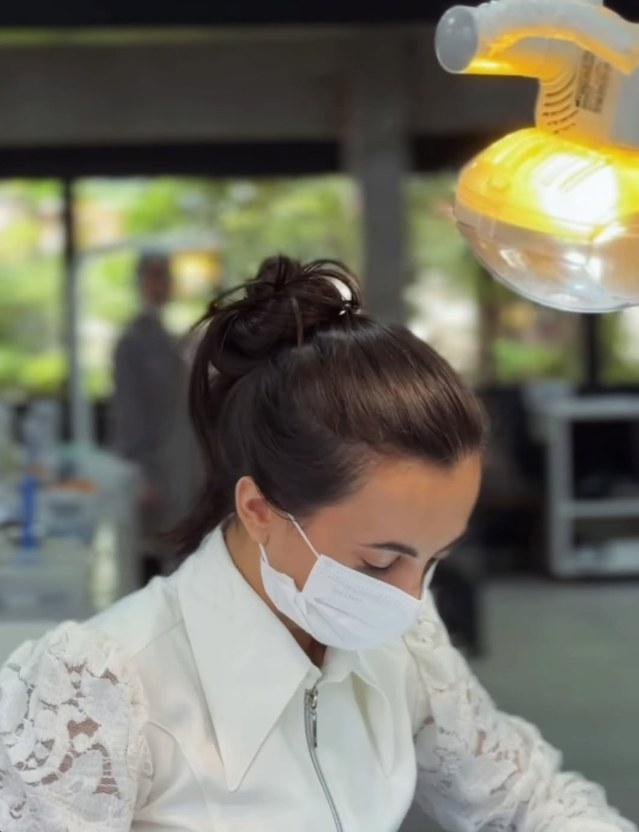
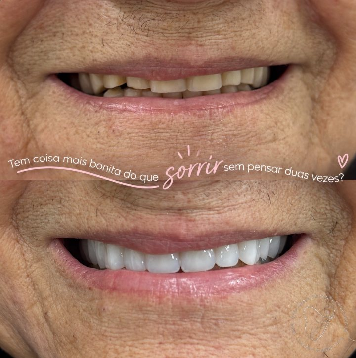
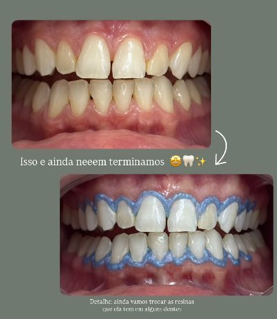
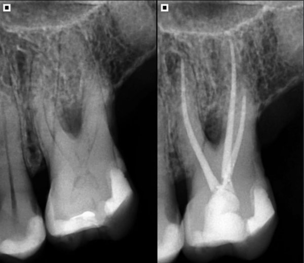

Restaurações estéticas
Resinas que devolvem forma, cor e harmonia aos dentes, com acabamento natural e discreto.
Agendar avaliaçãoAtendimento sem pressa e com explicação clara de cada etapa. Da estética do sorriso à endodontia e à ortodontia, cuide da sua saúde bucal com quem escuta você de verdade.
Do tratamento da dor à estética, tudo em um só consultório.
Resinas que devolvem forma, cor e harmonia aos dentes, com acabamento natural e discreto.
Agendar avaliaçãoTratamento de canal com técnica conservadora, que preserva ao máximo o seu dente.
Saber maisAlinhamento e correção da posição dos dentes, com planejamento individual para cada paciente.
Saber maisClareamento com proteção da gengiva e acompanhamento, para um resultado bonito e seguro.
Saber maisPeças feitas sob medida para recuperar dentes mais comprometidos, com resistência e estética.
Saber maisConsultas de rotina, limpeza e prevenção, para cuidar da saúde da boca antes que vire problema.
Saber maisO consultório realiza atendimentos de urgência. Chame no WhatsApp e veja o primeiro horário disponível.
E outros procedimentos odontológicos. Converse com a Dra. para saber o que é indicado no seu caso.


“Ela me explicou cada procedimento com clareza, transmitindo muita confiança.”
Kamyle S. · pacienteDra. Giovanna Pezenti Cavalcante é cirurgiã-dentista formada desde 2019, com mais de 7 anos de experiência, e especialista em Endodontia e Ortodontia (CRO-MS 7090). Atende em Mundo Novo - MS, cuidando do sorriso de forma completa: estética, clínica geral, urgências e muito mais.
Aqui a proposta é simples: ouvir com atenção, explicar com paciência e tratar cada pessoa como única, em um ambiente acolhedor e organizado. Também atua na rede pública do município, onde ajudou a levar o tratamento de canal para perto de quem antes precisava viajar até Naviraí.
Casos de pacientes da Dra. Giovanna, publicados com autorização.


“Um caso extremamente difícil e desafiador, com extensa calcificação pulpar e obliteração da câmara pulpar (…). Mas é possível visualizar no RX final uma condução exemplar do caso, com acesso conservador.”
Raio-X inicial (esquerda) e final (direita) de um caso de canal realizado pela Dra. Giovanna.

A matéria destaca a chegada do tratamento de canal à rede pública de Mundo Novo, com a abertura de uma sala na UBS Central em 2023. À frente da endodontia, a Dra. Giovanna Pezenti tratou 299 dentes. Antes disso, os pacientes eram encaminhados para Naviraí.
Ler a matéria completaNão encontrou sua dúvida? Mande uma mensagem que a gente responde.
Falar com o consultórioSim. O consultório realiza atendimentos de urgência, principalmente casos de dor de dente e fratura. Mande uma mensagem pelo WhatsApp contando o que aconteceu, e verificamos o primeiro horário disponível.
O atendimento no consultório é particular. Fale com a gente pelo WhatsApp para saber mais sobre o seu caso.
A Dra. ouve sua queixa, examina, explica o que encontrou e apresenta as opções de tratamento com clareza, para você decidir com tranquilidade.
O procedimento é feito com anestesia, então o paciente fica confortável durante todo o tratamento. Na maioria das vezes, o canal é justamente o que acaba com a dor que você está sentindo.
Varia de acordo com cada caso. O tempo é definido na avaliação, depois de analisar a sua necessidade e o objetivo do tratamento.
Pode haver uma sensibilidade leve e passageira. Por isso o clareamento é feito com acompanhamento, proteção da gengiva e orientações para casa.
Preencha os dados e sua mensagem chega direto no WhatsApp do consultório.